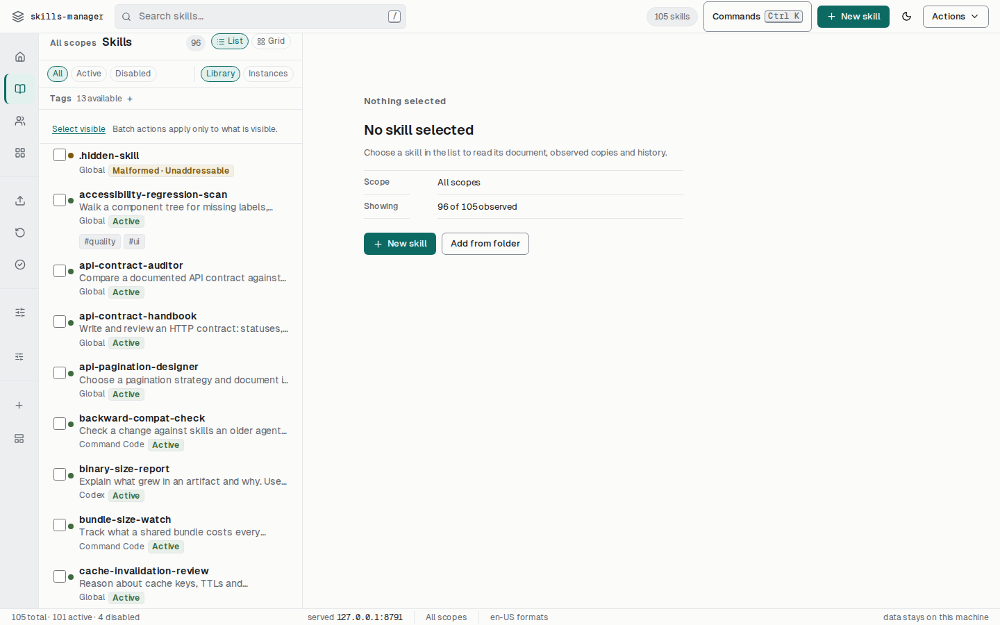

Local control plane
One place to see what each agent actually loaded.
The same skill, copied into seven agent directories, drifts. This tool shows you every physical copy on the machine, which of them disagree, how much context each one costs, and what happens if you change it — before you change it.
- Python 3.10+
- zero runtime dependencies
- 127.0.0.1 only, nothing leaves the machine

Install
The published distribution, or the checkout.
The runtime is standard library only — there is nothing to resolve, nothing to audit, and nothing that phones home.
pip install skill-control-plane
pipx install skill-control-plane
The import package is
skillsmgr and the entry point is skills-mgr; the
distribution name is longer on purpose, so it does not collide with anything
already called “skills” in your environment.
Or run it from a checkout
python3 -m skillsmgr --help
- Runtime
- Python 3.10 or newer, standard library only.
- Licence
- MIT.
- Where it runs
- Your machine. The web UI binds loopback and refuses to be pointed elsewhere.
- What it touches
- Your skill directories, read and written in place. No copy is made “for safety”.
What it does
Six things, each of which is a fact about your disk.
Nothing below is a score, a recommendation, or an inference about how popular a skill is. Every row is something the tool looked at and can show you the evidence for.
inventory
Every physical copy, with the directory it lives in
A skill named commit-signoff-policy is usually three different
directories. The list is per-instance, not per-name, and each row carries its
absolute path, its scope and whether it is enabled.
Disabled skills are renamed on disk to SKILL.md.disabled. That is
the format's own convention, so a skill you turned off is invisible to the
agent that would otherwise read it — without deleting anything.
divergence
Which copies disagree, and about what
Two copies of the same name that differ byte-for-byte are marked Divergent; identical ones are marked Duplicated. Both are derived by hashing the file — never by a stored flag that can go stale.
Divergence belongs to the cluster, not to each copy inside it: a chip on a single copy would claim that copy is broken when what is observed is that two of them no longer match.
review
Changes you review before they land
update preview writes a review containing a plan hash, and
update apply refuses a review that has been changed underneath
it. You cannot widen the blast radius after the fact, because the review you
approved is a different object from the one that would be applied.
For skills with no writable target there is nothing to review and nothing to apply — the tool says which target is unwritable instead of pretending.
recovery
Trash, snapshots, and a way back
Removing a skill moves it to trash with a timestamp rather than deleting it. Trashed copies can be restored, or emptied — and the purge action names which trash it is about, because agent directories keep their own.
backup and export write a verifiable archive;
restore reads one back and reports what it could not.
budget
What your skills cost in context
The Overview estimates each scope's token usage against the window size you select, and marks the line at 100%. Three reference documents are enough to push a scope past its budget; the meter tells you which scope and by how much.
It is an estimate of a multiple of one copy's cost, not a prediction of what an agent loads. The tool has no resolver, and does not claim one.
hygiene
A read-only report of what is wrong
doctor --hygiene surfaces duplicates, drift, malformed documents,
oversized bodies and context hotspots across sixteen categories. It is
read-only: the report never repairs anything on its own.
A check that could not run is reported as unavailable rather than counted as a pass. The number of findings you can trust is smaller than the number the tool printed, and the tool tells you which.
Scopes
Eight roots, listed rather than discovered behind your back.
Each row is a real directory the tool reads on this machine. A root that does not exist reports a count of zero — it is never silently skipped, and never assumed to be somewhere else.
| Scope | Directory | Id |
|---|---|---|
| Global | $SKILLS_MANAGER_DATA/skills-manager/skills | global |
| Claude Code | ~/.claude/skills | claude-code |
| Codex | ~/.codex/skills | codex |
| Cursor | ~/.cursor/skills | cursor |
| Opencode | ~/.config/opencode/skills | opencode |
| Gemini | ~/.gemini/skills | gemini |
| Command Code | ~/.commandcode/skills | commandcode |
| Agents | ~/.agents/skills | agents |
CLI reference
Twenty-eight commands. --scope where it means something.
Every command takes --json. Scope-aware commands take
--scope; the rest deliberately do not, because a flag that does
nothing is worse than a flag that is absent.
initcreate the store layoutlist/lscreatewrite a SKILL.mdaddadopt a directoryviewprint, or--raweditpatch fieldsopenreveal in the OSremove/rm,--trashdisable/enablevalidateand--evalssearchname and descriptionimportarchive inexportarchive outbackupwith snapshotsrestorefrom a snapshothistorywhat changed, whendoctor+--hygienestatscounts, not scorestrashlist / restore / purgetemplateslist / newdbrebuild / resync the indexsynccopy one skill to scopesscopesroots and token coststokensagainst a window sizeinstallfetch and reviewupdatepreview / apply / snapshotswebui/gui— the local UI
Exit codes are part of the contract:
0 ok, 1 error, 2 usage, 130
interrupted. An invalid skill name fails with 1 before the data
directory is created or touched.
See what is actually there.
Start with skills-mgr doctor --hygiene.
It is read-only and it is the fastest way to find out whether the drift you suspect
is real.